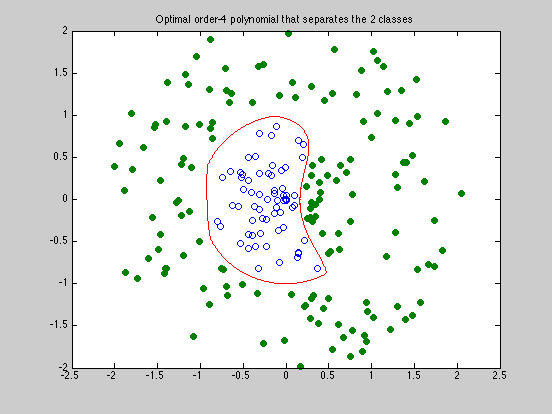

Polynomial discrimination
rand('state',0);
N = 100;
M = 120;
X = 2 * rand(2,N) - 1;
X = X * diag(0.9*rand(1,N)./sqrt(sum(X.^2)));
Y = 2 * rand(2,M) - 1;
Y = Y * diag((1.1+rand(1,M))./sqrt(sum(Y.^2)));
d = sqrt(sum((X-[1.1;0]*ones(1,N)).^2));
Y = [ Y, X(:,d<0.9) ];
X = X(:,d>1);
N = size(X,2);
M = size(Y,2);
p1 = [0,0,1,0,1,2,0,1,2,3,0,1,2,3,4]';
p2 = [0,1,1,2,2,2,3,3,3,3,4,4,4,4,4]'-p1;
np = length(p1);
op = ones(np,1);
monX = X(op,:) .^ p1(:,ones(1,N)) .* X(2*op,:) .^ p2(:,ones(1,N));
monY = Y(op,:) .^ p1(:,ones(1,M)) .* Y(2*op,:) .^ p2(:,ones(1,M));
fprintf(1,'Finding the optimal polynomial of order 4 that separates the 2 classes...');
cvx_begin
variables a(np) t(1)
minimize ( t )
a'*monX <= t;
a'*monY >= -t;
norm(a) <= 1;
cvx_end
fprintf(1,'Done! \n');
nopts = 2000;
angles = linspace(0,2*pi,nopts);
cont = zeros(2,nopts);
for i=1:nopts
v = [cos(angles(i)); sin(angles(i))];
l = 0; u = 1;
while ( u - l > 1e-3 )
s = (u+l)/2;
x = s * v;
if a' * ( x(op,:) .^ p1 .* x(2*op) .^ p2 ) > 0,
u = s;
else
l = s;
end
end;
s = (u+l)/2;
cont(:,i) = s*v;
end;
graph = plot(X(1,:),X(2,:),'o', Y(1,:), Y(2,:),'o', cont(1,:), cont(2,:), '-');
set(graph(2),'MarkerFaceColor',[0 0.5 0]);
title('Optimal order-4 polynomial that separates the 2 classes')
Finding the optimal polynomial of order 4 that separates the 2 classes...
Calling SDPT3: 227 variables, 16 equality constraints
Note: for improved efficiency, SDPT3 is solving the dual problem.
------------------------------------------------------------
num. of constraints = 16
dim. of socp var = 16, num. of socp blk = 1
dim. of linear var = 211
*******************************************************************
SDPT3: homogeneous self-dual path-following algorithms
*******************************************************************
version predcorr gam expon
NT 1 0.000 1
it pstep dstep p_infeas d_infeas gap mean(obj) cputime
-------------------------------------------------------------------
0 0.000 0.000 2.9e+02 7.3e+00 2.1e+02 5.000000e-01 0:0:00 chol 1 1
1 0.972 0.972 1.3e+01 3.1e-01 9.9e+00 -4.355055e-01 0:0:00 chol 1 1
2 0.668 0.668 8.6e+00 2.1e-01 9.4e+00 -4.546301e-01 0:0:00 chol 1 1
3 1.000 1.000 5.0e+00 1.2e-01 8.1e+00 -4.956878e-01 0:0:00 chol 1 1
4 0.793 0.793 2.0e+00 4.9e-02 2.8e+00 -1.953892e-01 0:0:00 chol 1 1
5 1.000 1.000 6.4e-01 1.6e-02 1.0e+00 -7.942378e-02 0:0:00 chol 1 1
6 0.604 0.604 4.7e-01 1.2e-02 7.3e-01 -5.485319e-02 0:0:00 chol 1 1
7 1.000 1.000 3.1e-01 7.7e-03 4.9e-01 4.550449e-03 0:0:00 chol 1 1
8 1.000 1.000 1.2e-01 3.1e-03 1.8e-01 4.727396e-02 0:0:00 chol 1 1
9 1.000 1.000 6.4e-02 1.6e-03 9.1e-02 4.438631e-02 0:0:00 chol 1 1
10 1.000 1.000 2.9e-02 7.3e-04 4.1e-02 4.393969e-02 0:0:00 chol 1 1
11 1.000 1.000 6.8e-03 1.7e-04 9.2e-03 4.249554e-02 0:0:00 chol 1 1
12 1.000 1.000 3.3e-03 8.1e-05 4.5e-03 4.189893e-02 0:0:00 chol 1 1
13 1.000 1.000 1.4e-03 3.4e-05 1.9e-03 4.138410e-02 0:0:00 chol 1 1
14 0.956 0.956 1.7e-04 4.3e-06 2.3e-04 4.104140e-02 0:0:00 chol 1 1
15 0.989 0.989 1.4e-05 3.4e-07 1.7e-05 4.099683e-02 0:0:00 chol 1 1
16 1.000 1.000 8.8e-07 2.2e-08 1.1e-06 4.099346e-02 0:0:00 chol 1 1
17 1.000 1.000 1.7e-08 4.2e-10 1.8e-08 4.099323e-02 0:0:00 chol 1 1
18 1.000 1.000 3.1e-10 7.7e-12 3.2e-10 4.099323e-02 0:0:00
Stop: max(relative gap, infeasibilities) < 1.49e-08
-------------------------------------------------------------------
number of iterations = 18
primal objective value = 4.09932255e-02
dual objective value = 4.09932254e-02
gap := trace(XZ) = 3.23e-10
relative gap = 3.10e-10
actual relative gap = 1.15e-10
rel. primal infeas = 3.10e-10
rel. dual infeas = 7.67e-12
norm(X), norm(y), norm(Z) = 5.6e-01, 1.0e+00, 2.1e+01
norm(A), norm(b), norm(C) = 1.0e+02, 1.0e+00, 1.0e+00
Total CPU time (secs) = 0.3
CPU time per iteration = 0.0
termination code = 0
DIMACS: 3.1e-10 0.0e+00 7.7e-12 0.0e+00 1.1e-10 3.0e-10
-------------------------------------------------------------------
------------------------------------------------------------
Status: Solved
Optimal value (cvx_optval): -0.0409932
Done!
